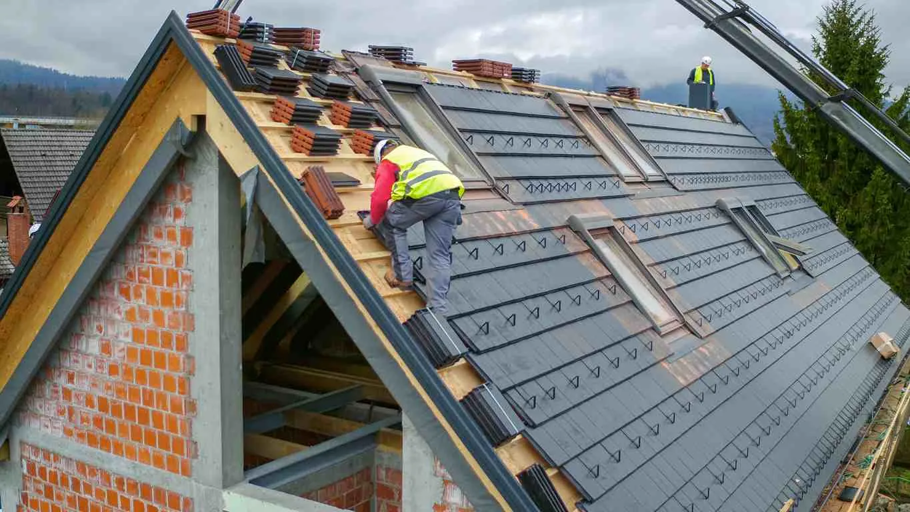
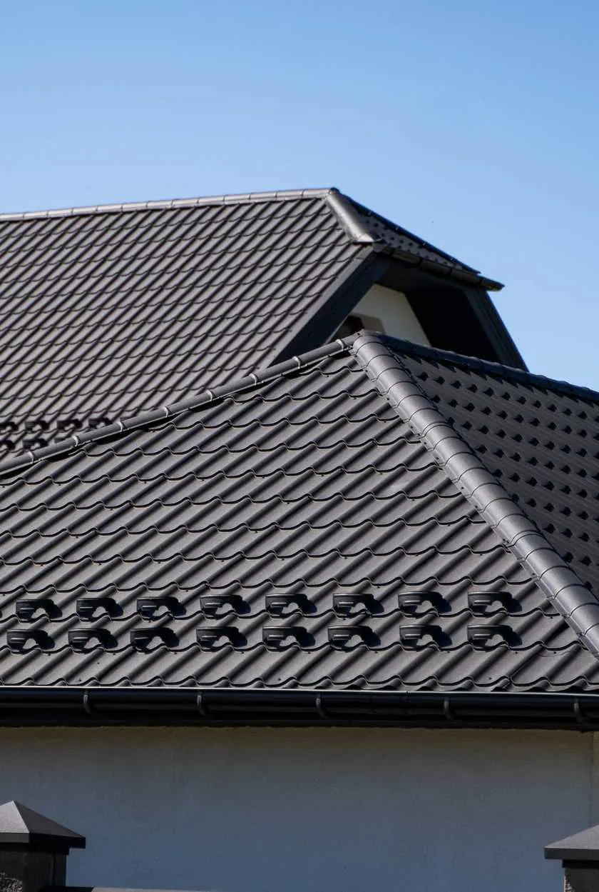

- Architectural Shingles
- Cap Sheet
- Composition Shingles
- Does a New Roof Increase Home Value? What You Should Know
- Impact Resistant Roof
- Laminated Shingles
- Luxury Asphalt Shingles
- Rolled Asphalt Roofing
- What Is a Built-Up Roof?
- What Is a Downspout?

An impact-resistant roof is designed to withstand damage from hail, high winds, and flying debris, making it an excellent choice for areas prone to severe weather.
This type of roof typically includes materials like Class 3 or Class 4 impact-resistant shingles, metal, or synthetic composites, providing long-lasting protection for residential and commercial structures.
What Is an Impact-Resistant Roof?
Impact-resistant roofs are made of materials tested for durability under extreme conditions. The UL 2218 Impact Resistance Test rates them on a scale of Class 1 to Class 4, with Class 4 offering the highest level of protection. These materials resist cracking, splitting, or other damage caused by heavy impacts, ensuring reliable performance over time.
How Impact-Resistant Roofs Are Made
The manufacturing process of impact-resistant roofing materials may include the following materials:
- Reinforced Asphalt Shingles: Modified with polymers for added flexibility and toughness
- Metal Panels: Often made of steel or aluminum to provide superior wind and impact resistance
- Synthetic Composites: Engineered for durability and energy efficiency, mimicking the look of traditional materials
Pros and Cons of an Impact-Resistant Roof
Impact-resistant roofing is an excellent choice for properties located in areas with severe weather risks. Whether protecting homes in hail-prone regions, safeguarding businesses in hurricane zones, or enhancing durability and reducing insurance costs, impact-resistant roofing provides reliable, long-term benefits for a variety of needs.
Review some pros and cons of impact-resistant roofing for residential and commercial properties.
Advantages for Residential Properties

- Durability: Impact-resistant roofs are uniquely designed to withstand harsh weather conditions, such as hailstorms, high winds, and flying debris. This durability minimizes the likelihood of structural damage, leaks, or frequent repairs, offering homeowners long-term peace of mind.
- Insurance Discounts: Many insurance providers recognize the enhanced protection offered by Class 4 impact-resistant shingles and reward homeowners with discounts on premiums. These savings can offset the higher upfront installation costs over time, making the investment more economical in the long run.
- Extended Lifespan: Unlike traditional roofing materials, impact-resistant shingles and other materials have an extended lifespan due to their robust construction. They are less prone to cracking, warping, or breaking, meaning homeowners can avoid premature roof replacements and enjoy their roofs for decades.
- Aesthetic Options: Modern impact-resistant materials come in a wide range of colors, textures, and styles, including options that mimic slate, wood shake, or traditional asphalt shingles. This variety allows homeowners to select a roof that complements their home’s architecture while benefiting from enhanced durability.
Drawbacks for Residential Properties
- Higher Initial Cost: The upfront cost of impact-resistant roofing materials is significantly higher than standard roofing options. While the investment pays off in durability and insurance savings, the higher price point may deter some homeowners.
- Specialized Installation: Impact-resistant roofs often require skilled professionals with experience installing Class 4 or similar materials. This specialized labor can increase installation costs, especially in regions where such expertise is scarce.
- Weight Concerns: Some impact-resistant materials, particularly metal roofing, are heavier than traditional options. This added weight may necessitate structural reinforcements, increasing the cost and complexity of the installation process.
Advantages for Commercial Properties
- Reduced Maintenance Costs: For commercial properties with large roof areas, the durability of impact-resistant materials can significantly reduce ongoing maintenance expenses. The roofs resist damage from environmental factors, such as heavy rain, hail, or falling branches, resulting in fewer repairs over time.
- Compliance: Many industries, particularly those involving hazardous materials or sensitive operations, have strict safety regulations for roofing systems. Impact-resistant roofs often meet or exceed these standards, ensuring compliance while offering enhanced protection for the building’s contents.
- Weather Resilience: Large commercial roofs are more exposed to severe weather due to their size and flat or low-slope design. Impact-resistant materials protect against common vulnerabilities, such as punctures or cracking, ensuring uninterrupted operations and preventing costly downtime.
Drawbacks for Commercial Properties
- Upfront Investment: Because of their larger surface area, commercial buildings incur a higher cost for impact-resistant roofing materials. This initial expense can be a significant hurdle for businesses operating on tight budgets, even though the long-term savings may justify the investment.
- Regional Suitability: In areas with mild or predictable weather patterns, the additional expense of impact-resistant materials may not be as practical or cost-effective. Businesses in such regions may find that standard roofing options meet their needs at a fraction of the cost.
- Aesthetic Limitations: While residential impact-resistant roofing comes in various styles, commercial options are often more limited in design and appearance. This factor can be a drawback for businesses prioritizing visual appeal, such as retail outlets or office buildings seeking to project a specific image.
Frequently Asked Questions
Review some common questions to get additional information about impact-resistant roofing.
How Much More Do Impact-Resistant Shingles Cost?Depending on the material and brand, impact-resistant shingles cost approximately 10% to 25% more than standard shingles.
What Is the Lifespan of an Impact-Resistant Roof?An asphalt impact-resistant roof has an estimated lifespan of 20 to 30 years for asphalt, while metal or synthetic materials can last for 50 years or more.
How Do You Know If Your Roof Is Impact Resistant?Look for the Class 4 or Class 3 rating on the shingles or check the manufacturer’s certification.
Are Architectural Shingles Better than Impact-Resistant Shingles?Architectural shingles prioritize aesthetics but may lack impact resistance. Some brands combine both features, offering Class 4 architectural shingles.
What Is the Most Hurricane-Proof Roof?Metal roofs, particularly steel or aluminum, are the most hurricane-proof, offering superior wind and debris resistance.
What Roof Has the Shortest Lifespan?Three-tab asphalt shingles have the shortest lifespan, lasting only 10 to 20 years.
How Long Does It Take To Replace Shingles?Replacement can take one to five days, depending on roof size and weather conditions.
Schedule a Professional Installation
An impact-resistant roof protects your property from severe weather and lowers maintenance costs over time. If you’re considering upgrading to this durable roofing solution, contact American Roofing Company today for expert guidance and a free quote!